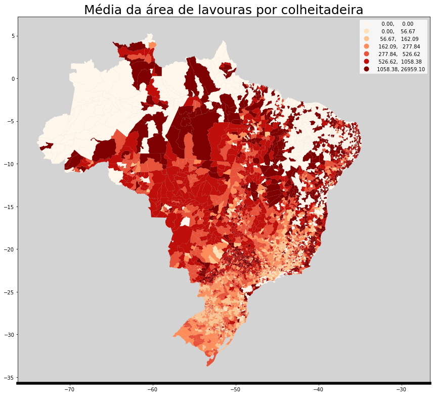

Agropecuária em Valores¶
Carregando bibliotecas¶
# dados
import ipeadatapy as ipea
import sgs
# manipulacao de dados
import pandas as pd
import geopandas as gpd
# graphs
import plotly.graph_objs as go
import plotly.offline as py
import cufflinks as cf
import matplotlib.pyplot as plt
import seaborn as sns
py.init_notebook_mode(connected=True)
cf.go_offline()
pib_agro2 = ipea.timeseries(
'SCN10_VAAGRON10'
)
pib_agro2 = pib_agro2[pib_agro2.YEAR >= 1990]
pib_agro2['VALUE (R$)'].iplot(kind='bar',color='green', title= 'PIB agropecuária anual')
Esta mesma série foi deflacionada pelo IPCA ( IPEADATA também trás disponível a série deflacionada)
agro_deflat=pd.read_csv(
'https://github.com/odxone/imil_agro_anexo/raw/main/nbs/data_agro_valores/pib_agro_valores.csv',
sep=';',
)[['DATA', 'Nominal', 'Real']]
agro_deflat=agro_deflat.set_index(['DATA'])
agro_deflat.iplot(title='PIB-Valor Adicionado Agropecuária- correção pelo IPCA de Março de 2021')
Já os mapas foram retirados do shape file fornecido pelo IBGE no Censo Agropecuário neste endereço:
https://mapasinterativos.ibge.gov.br/agrocompara/
shape=gpd.read_file('https://github.com/odxone/imil_agro_anexo/raw/main/nbs/data_gini/mun_agro.zip')
shape.head(2)
| OBJECTID | MUNICIPIO | Shape_Leng | Shape_Area | V1 | V2 | V3 | V4 | V5 | V6 | ... | GEO | V32 | V33 | V34 | V35 | V36 | V37 | V38 | V39 | geometry | |
|---|---|---|---|---|---|---|---|---|---|---|---|---|---|---|---|---|---|---|---|---|---|
| 0 | 1 | Lupionópolis - PR | 0.514701 | 0.010596 | 173.0 | 59.7001 | 3.23121 | 165.7380 | 852.3680 | 124.304 | ... | 4113809.0 | 2.45788 | 1.15607 | 48.5549 | 8.58624 | 8.09249 | 68.7861 | 71.0983 | 36.9942 | POLYGON Z ((-51.63021 -22.66372 0.00000, -51.6... |
| 1 | 2 | Águas de Lindóia - SP | 0.344094 | 0.004856 | 69.0 | 28.4016 | 3.42029 | 36.3902 | 80.0584 | 133.431 | ... | 3500501.0 | 2.18536 | 5.79710 | 39.1304 | 2.43528 | 13.04350 | 49.2754 | 60.8696 | 46.3768 | POLYGON Z ((-46.61019 -22.43936 0.00000, -46.6... |
2 rows × 45 columns
fig, ax = plt.subplots(figsize=(12,12), subplot_kw={'aspect':'equal'})
shape.plot(
column='V2',
scheme='Quantiles',
k=7,
cmap='OrRd',
legend=True,
ax=ax
)
ax.set_title("Área média por município(Agropecuária)", fontdict={'fontsize':25})
ax.set_xlabel(' ', fontdict={'fontsize':20})
ax.set_facecolor('lightgrey')
ax.spines['bottom'].set_linewidth(5.5)
fig.tight_layout()
regioes = pd.read_csv(
"https://github.com/odxone/imil_agro_anexo/raw/main/nbs/data_agro_valores/regioes_agro.csv",
sep = ";",
encoding='latin-1'
)
mapa = pd.merge(shape,regioes,on=['OBJECTID'],how='left')
gráfico = mapa
fig, ax = plt.subplots(figsize=(14,6))
sns.set_style('darkgrid')
sns.boxplot(x=gráfico['Estado'],
y=gráfico['V2'],
ax=ax,
data=gráfico,
palette="Dark2")
ax.set_title("Área Média (ha) por município", fontdict={'fontsize':25})
ax.spines['bottom'].set_linewidth(5.5)
ax.tick_params(labelsize=20)
plt.xticks(rotation=90, size=17)
plt.yticks(rotation=0, size=17)
ax.set_ylabel('área média em hectares', fontdict={'fontsize':20})
ax.set_xlabel(' ', fontdict={'fontsize':20})
fig.tight_layout()

area_por_estado = mapa.groupby(['Estado', 'Região']).sum()[['V2']].reset_index()
area_por_estado = area_por_estado.sort_values(ascending=False, by='V2')
gráfico = area_por_estado
fig, ax = plt.subplots(figsize=(14,6))
sns.set_style('darkgrid')
sns.barplot(x=gráfico['Estado'],
y=gráfico['V2'],
ax=ax,
data=gráfico,
palette="Dark2")
ax.set_title("Área Média (ha) por município", fontdict={'fontsize':25})
ax.spines['bottom'].set_linewidth(5.5)
ax.tick_params(labelsize=20)
plt.xticks(rotation=90, size=17)
plt.yticks(rotation=0, size=17)
ax.set_ylabel('área média em hectares', fontdict={'fontsize':20})
ax.set_xlabel(' ', fontdict={'fontsize':20})
fig.tight_layout()

Já a série trimestral foi obtida do SGS do Banco Central, através da API
series_VA = [22105,22106,22107,22110]
labels_VA = ['PIB_Agropecuária','PIB_Indústria','PIB_serviços','Consumo_das_famílias']
data_inicial ='01-01-1996'
data_final = '01-01-2021'
Valor_adicionado_por_setor = sgs.dataframe(series_VA, start= data_inicial, end=data_final)
Valor_adicionado_por_setor = Valor_adicionado_por_setor.rename(columns={s:l for s, l in zip(series_VA, labels_VA)})
Valor_adicionado_por_setor.head()
| PIB_Agropecuária | PIB_Indústria | PIB_serviços | Consumo_das_famílias | |
|---|---|---|---|---|
| 1996-01-01 | 95.12 | 100.69 | 100.80 | 98.86 |
| 1996-04-01 | 96.59 | 97.05 | 102.31 | 100.93 |
| 1996-07-01 | 101.69 | 105.99 | 103.69 | 103.70 |
| 1996-10-01 | 126.16 | 99.54 | 101.56 | 109.13 |
| 1997-01-01 | 101.74 | 104.25 | 103.86 | 106.65 |
Valor_adicionado_por_setor.iplot(title= 'PIB Trimestral por Setor- Dados dessazonalizados')